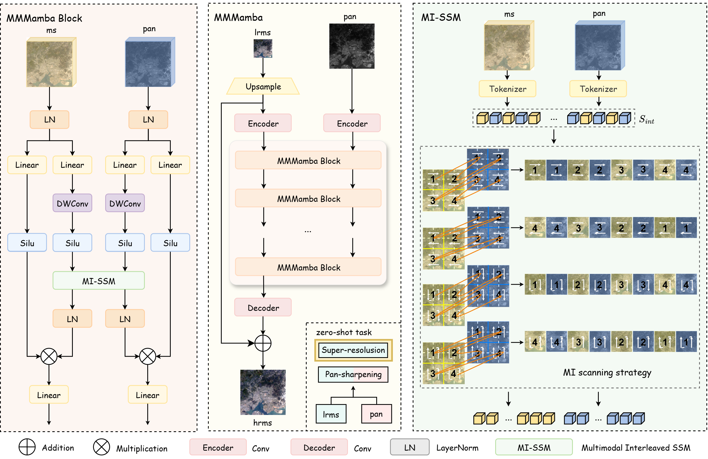

About Me
I am currently a Principal Researcher responsible for visual generation and world model, at AI Lab, Huawei Hong Kong Research Center. Previously, I obtained my Ph.D. in Computer Science and Engineering at The Hong Kong University of Science and Technology (HKUST). Prior to joining HKUST, I obtained a Bachelor's degree from Northwestern Polytechnical University (NWPU) with honor.
My primary research interests lie in world model, multi-modal generative model, and AI agents.
Our team is dedicated to advancing research in Multimodal Generative Models and AI Agents. We are actively seeking experienced full-time researchers and interns to join us. If you're interested, feel free to reach out via email.
🔥 News
2026.02🎉🎉 We release Capybara, the first unified visual creation model!
2026.02🎉🎉 Our paper got accepted by CVPR 2026!
2025.11🎉🎉 Our paper got accepted by AAAI 2026!
2025.07🎉🎉 Our paper got accepted by IEEE TMI!
2025.06🎉🎉 Two papers got accepted by IEEE TMI!
2025.05🎉🎉 I successfully passed my PhD thesis defense, thanks to my advisor and all the committee members!
2025.03🎉🎉 I have started my Student Researchership at Intelligent Creation, ByteDance.
2025.01🎉🎉 Our paper got accepted by ICLR 2025, see you in Singapore!
2024.12🎉🎉 Our paper got accepted by IEEE JBHI!
2024.11🎉🎉 I have started researching interactive video generation at Kling Team, Kuaishou!
2024.08🎉🎉 Our paper got accepted by IEEE Transactions on Image Processing and will be published soon!
2024.05🎉🎉 Our paper got accepted by MICCAI 2024, see you in Marrakesh!
2024.05🎉🎉 I have started my Student Researchership at Tencent!
2024.01🎉🎉 Our paper got accepted by Patterns and will be published soon!
2023.12🎉🎉 Our paper got accepted by AAAI 2024, see you in Vancouver!
2023.11🎉🎉 Our paper got accepted by Nature Medicine and will be published soon!
2023.06🎉🎉 I successfully passed my PhD qualifying examination!
2023.05🎉🎉 Our two papers got accepted by MICCAI 2023 (one early accepted), see you in Vancouver!
2023.03🎉🎉 Our paper got accepted by CVPR 2023, see you in Vancouver!
2023.02🎉🎉 Our paper was shortlisted by CSE Research and Technology Forum!
2022.07🎉🎉 Glad to be selected for MICCAI Travel Award!
2022.05🎉🎉 Our paper got early accepted by MICCAI 2022, see you in Singapore!
2022.03🎉🎉 Honored to be the person in charge of 2022/23 TSSSU. Thank you, Innovation and Technology Commission!
2021.10🎉🎉 Our paper got accepted by IEEE JSAC!
📝 Selected Publications
* denotes co-first authorship, † denotes project leadership, ✉️ denotes correspondence author.
VISUAL GENERATION & WORLD MODELS


A Survey of Interactive Generative Video

MODEL GENERALIZATION & DATA SHIFT

LLM-driven Medical Report Generation via Communication-efficient Heterogeneous Federated Learning


🎖 Selected Honors and Awards
- The First Prize and Application Innovation Award in the ASC17 Student Supercomputer Challenge, 1/230 (2017)
- The Excellent Paper Award for the National College Students Mathematics Modeling Competition, 12/33062 (2017)
- The First Prize in the National College Students Mathematics Modeling Competition, Top 0.88% (2017)
- The China National Scholarship for two years, Top 2% (2017/2018)
- The Honor of Outstanding Graduate at Northwestern Polytechnical University, Top 5% (2019)
💻 Professional Service
Regular Conference Program Committee Member
- International Conference on Medical Image Computing and Computer Assisted Intervention (MICCAI)
- International Conference on Computer Vision (ICCV)
- IEEE/CVF Conference on Computer Vision and Pattern Recognition (CVPR)
- AAAI Conference on Artificial Intelligence (AAAI)
Regular Journal Reviewer
- Information Fusion
- IEEE Transactions on Medical Imaging (TMI)
- IEEE Transactions on Circuits and Systems for Video Technology (TCSVT)
- IEEE Transactions on Image Processing (TIP)
- IEEE Transactions on Neural Networks and Learning Systems (TNNLS)
Competition and Workshop Organization
- DRAC 2022: Diabetic Retinopathy Analysis Challenge (within MICCAI 22)
📚 Teaching Experience
Course
- COMP 4451 Game Programming, Teaching Assistant, 2021-2022 Spring Semester.
- COMP 4421 Image Processing, Teaching Assistant, 2022-2023 Fall Semester.
- COMP 3321 Fundamentals of Artificial Intelligence, Teaching Assistant, 2023-2024 Fall Semester.
- COMP 1001 Exploring Multimedia and Internet Computing, Teaching Assistant, 2024-2025 Spring Semester.
Mentee
- 2021.11 - 2023.01, Siyu Chen (UG Student @ HKUST, next: Ph.D. Student in HKUST)
- 2023.06 - 2024.02, Hoi-Tin Wong (UG Student @ HKUST)
- 2023.07 - 2024.02, Lingqi Zeng (UG Student @ HKUST)
- 2022.06 - 2024.05, Yuhan Cheng (UG Student @ HKUST, next: M.Ph. Student in HKUST(GZ))
- 2023.08 - 2025.02, Kai Syun Hou (M.Ph. Student in HKUST)
- 2023.02 - 2025.06, Yifei Wu (M.S. Student @ NWPU)
- 2025.05 - present, Jingran Su (Ph.D. Candidate @ PolyU)
- 2025.05 - present, Zhaoqing Li (Ph.D. Candidate @ CUHK)
- 2025.06 - present, Zhefan Rao (Ph.D. Candidate @ HKUST)
- 2025.06 - present, Meng Chu (Ph.D. Candidate @ HKUST)
💬 Grants
2022.03 - 2024.03, Technology Start-up Support Scheme for Universities (TSSSU), The Innovation and Technology Commission (ITC) of the Hong Kong SAR.
💼 Internships

Student Researcher, Tencent, China
2024.05 - 2024.10

Student Researcher, Kling Team, Kuaishou (Kwai), China
2024.11 - 2025.03

Student Researcher, Intelligent Creation, ByteDance, China
2025.03 - 2025.06